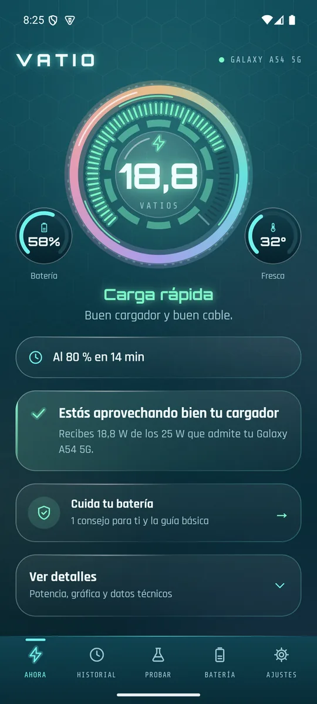
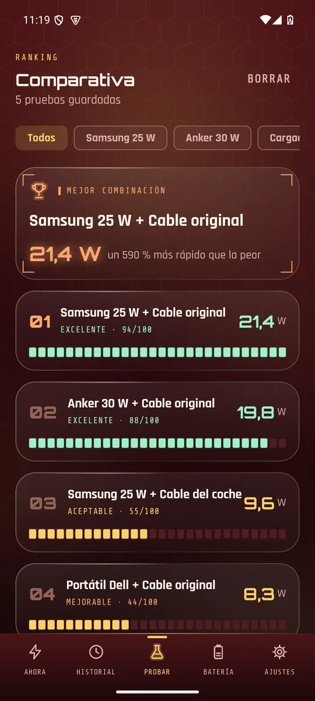
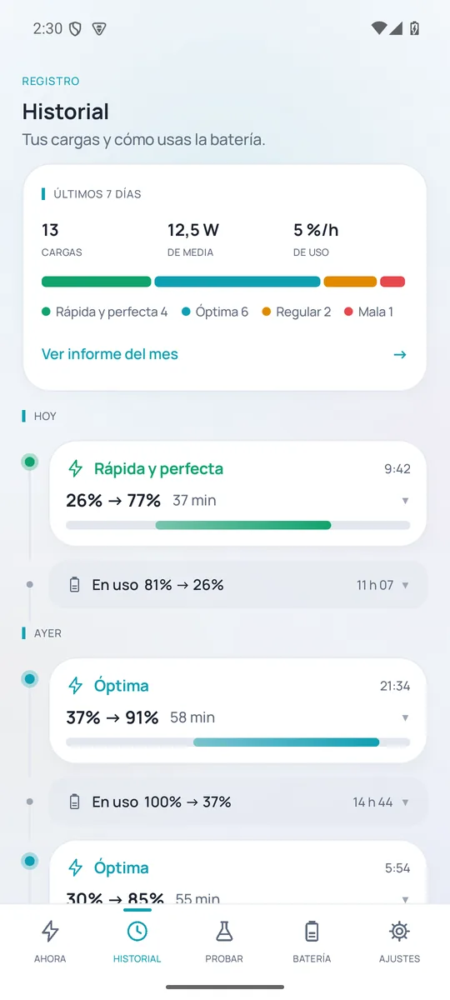
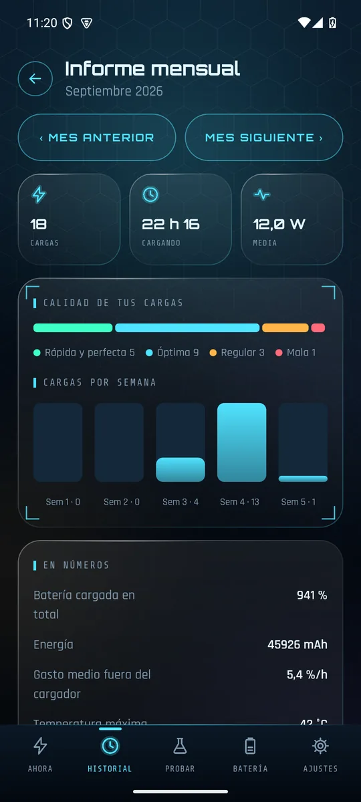
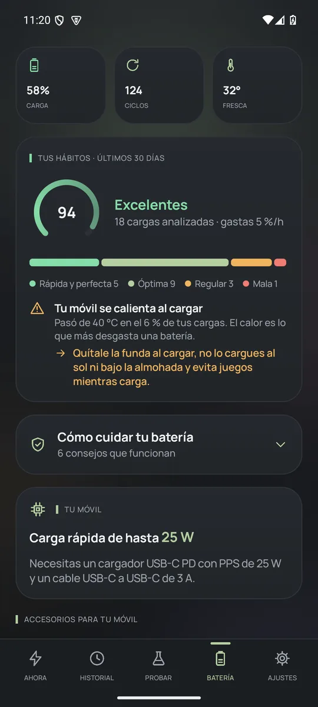
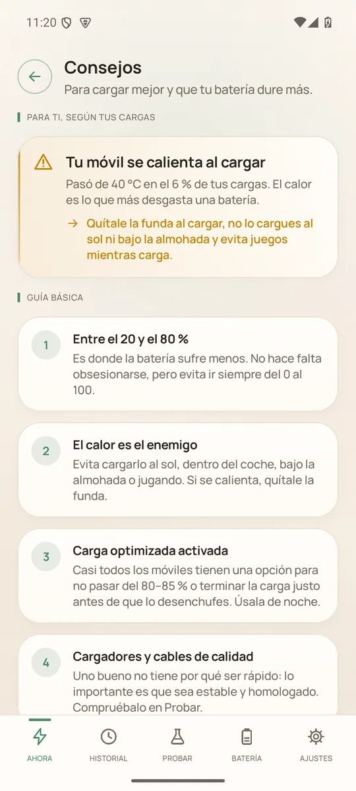
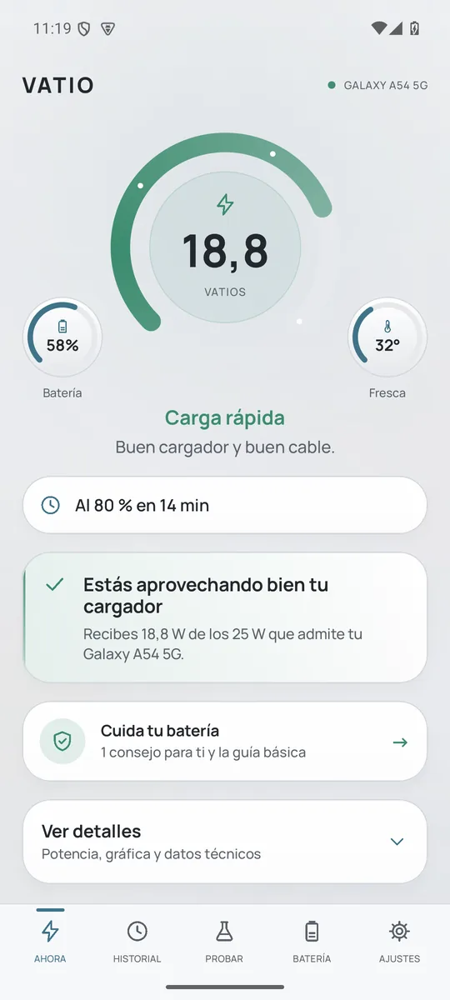

VATIO
VATIOMira a qué velocidad carga tu móvil.
Vatios reales en directo, verificados con tu batería. Vatio te dice si el cable o el cargador frenan la carga y qué cargador necesita de verdad tu móvil.

El problema
Tu móvil nuevo ya no trae cargador.
Y nadie te explica cuál comprar.
Con un cargador o un cable que no encaja, tu móvil puede cargar a la mitad de velocidad sin que te des cuenta. Vatio te lo enseña en segundos.
Herramienta gratuita
¿Cuántos vatios admite tu móvil?
Escribe tu modelo y te decimos su carga máxima y qué cargador y cable necesitas.
Cargando el catálogo…
Qué hace Vatio
Todo lo que tu móvil no te cuenta.
Vatios en directo
La potencia real que entra en la batería, el tiempo hasta el 80 % y si estás aprovechando tu cargador.
¿Cable o cargador?
Un asistente con 2 o 3 pruebas cortas te dice cuál de los dos está frenando la carga.
Tu cargador ideal
Los vatios y el tipo de carga que admite tu modelo, y qué evitar. Antes de comprar, prueba el que ya tienes.
Comparativa
Prueba tus cargadores y cables y míralos en un ranking. Sabrás cuál usar en casa, en el trabajo o en el coche.
Historial e informe
Cada carga registrada y puntuada, y un informe mensual claro, listo para compartir.
Cuida tu batería
Avisos de calor y al 80 %, nota de tus hábitos y consejos hechos a tu medida.
Así es por dentro
Clara de un vistazo.







Mito o verdad
Lo que todo el mundo dice sobre cargar el móvil.
Cargar el móvil por la noche lo estropea
Al llegar al 100 % deja de cargar. Lo que desgasta es pasar muchas horas al 100 % y con calor: activa la carga optimizada.
Un cargador de más vatios quema la batería
El móvil solo toma lo que admite. Un cargador de 65 W en un móvil de 25 W carga a 25 W.
Hay que dejar que llegue al 0 %
Eso era con las baterías antiguas. A las de litio les sienta mejor moverse entre el 20 y el 80 %.
El calor es el peor enemigo de la batería
Cargar a más de 40 °C es lo que más la desgasta: bajo la almohada, al sol o jugando mientras carga.
La carga rápida estropea la batería
Muy poco. El móvil solo carga rápido al principio y frena cerca del 80 %. El problema es el calor, no los vatios.
No todos los cables USB-C son iguales
Uno de 3 A se queda en unos 33 W. Si tu móvil admite más, necesitas uno de 5 A.
Ni banners, ni vídeos, ni avisos falsos de virus.
Tu historial no sale de tu teléfono. Sin cuentas.
Lo que tarda una prueba en decirte si falla el cable o el cargador.
Prueba Vatio antes que nadie.
Solo necesitas un móvil Android. Tu opinión decide cómo será la versión final.
Preguntas frecuentes
Lo que nos preguntáis.
¿Vatio es gratis?
Sí. Vatio es gratis, sin anuncios y sin suscripciones.
¿Hay versión para iPhone?
De momento solo Android: iOS no deja a las apps leer la corriente de carga.
¿Es fiable la medida?
Vatio lee la corriente y el voltaje que da tu propio móvil y los contrasta con cuánto sube la batería. Por eso decimos que son vatios «verificados».
¿Por qué no veo los vatios que pone mi cargador?
El móvil solo carga al máximo hasta más o menos el 50–80 % y luego baja a propósito para cuidar la batería. Además, medimos lo que entra en la batería, que siempre es algo menos de lo que anuncia el cargador.
¿Qué datos recoge?
Ninguno sale de tu móvil. El historial y las pruebas se guardan en tu teléfono y puedes borrarlos cuando quieras. Política de privacidad.
¿Gasta batería?
Muy poca: usa los datos que Android ya tiene y solo mide de forma continua mientras el móvil está enchufado.
En mi Xiaomi o Samsung deja de funcionar en segundo plano
El sistema la cierra para ahorrar. En Xiaomi activa el inicio automático y pon el ahorro de batería en «Sin restricciones». En Samsung, sácala de «Apps en suspensión». Vatio te guía paso a paso.
¿Recomendáis cargadores concretos?
Sí, por compatibilidad con tu móvil, nunca por quién paga. Siempre te decimos primero qué características buscar para que lo compres donde quieras. Algunos enlaces son de afiliado y están señalados.